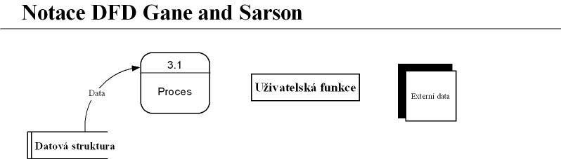
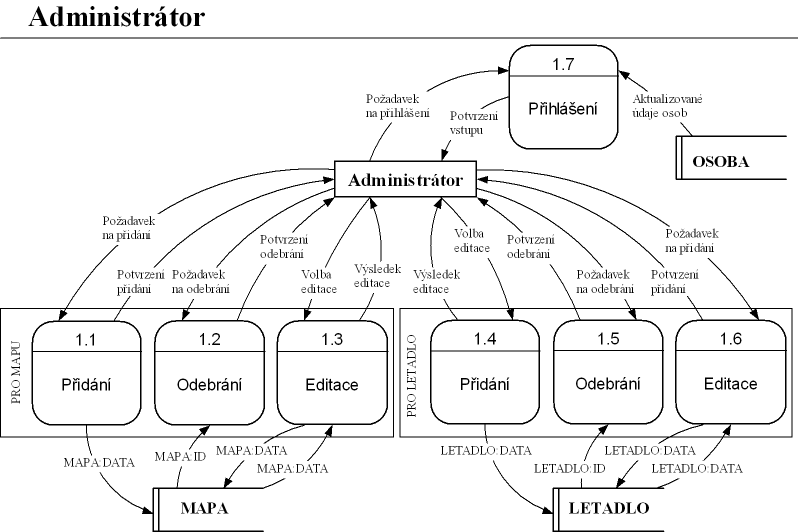
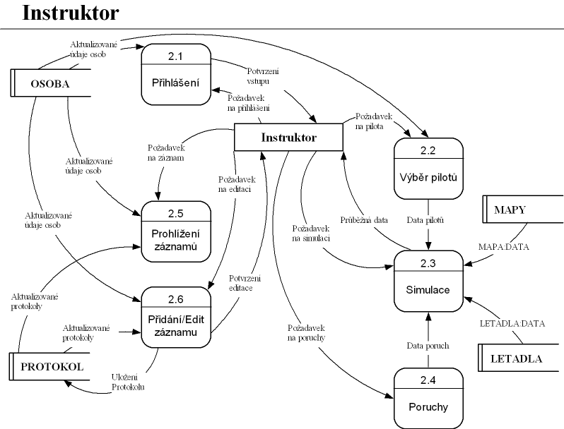
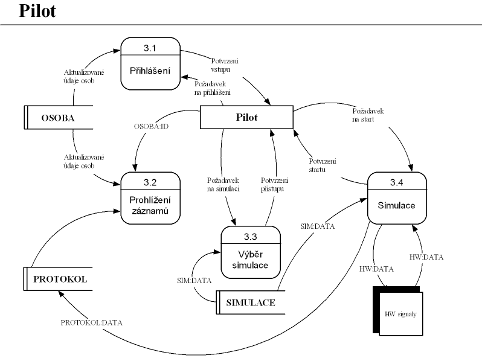
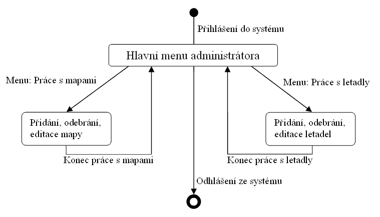
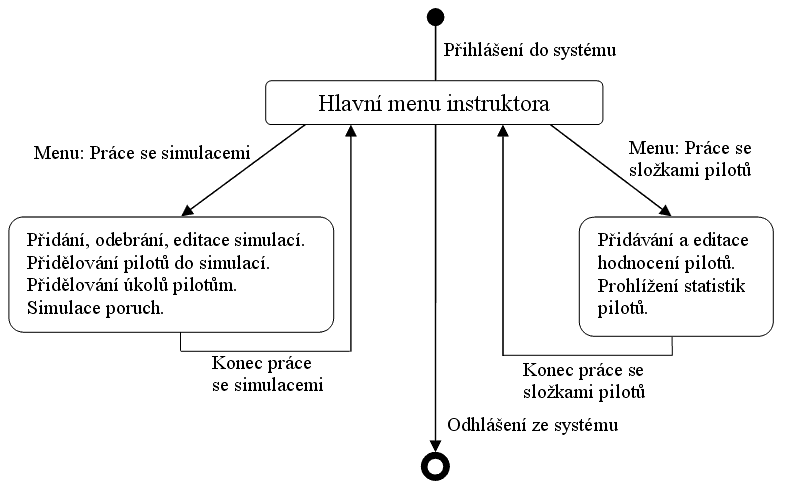
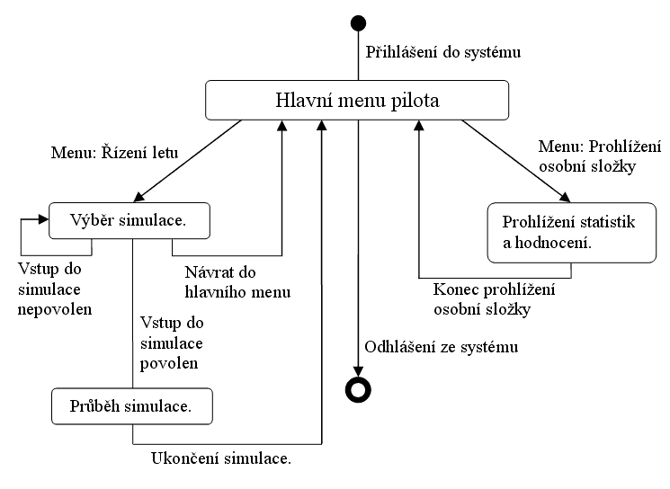
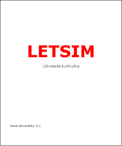

Analytick� studie
|
|
|
|
|
|
|
Datov� model

Datov� model ve form�tu XML je ke sta�en� zde.
Zp�t na za��tek
Popis datov�ho modelu
Tento projekt nen� projekt typu "informa�n� syst�m", jak po�adavky na zpracov�n� analytick� ��sti dokumentace v tomto p�edm�tu evidentn� p�edpokl�daj�. Proto nem� v�t��ho smyslu vytv��et nesmysln� datov� model pro tento projekt. Pro demonstaci toho, �e danou problematiku ovl�d�me je zde uveden tento datov� model.
Tento datov� model slou�� k evidenci osob. Ka�d� z t�chto osob m��e z�skat opr�vn�n� k pilot�� a k instrukt�i (v�dy od jednoto typu opravn�n� k pilot�i, resp. instrukt�i, maxim�ln� jedno - vyj�d�eno relacemi typu 1:1 a 1:N). D�le je zde evidence uskute�n�n�ch cvi�n�ch let� formu zpr�vy. Cvi�n�ho letu se ��astn� pr�v� jeden instruktor a libovoln� po�et pilot�. T�m, �e se ka�d� pilot m��e z��astnit libovoln�ho po�tu cvi�n�ch let� a ka�d�ho cvi�n�ho letu se m��e z��astnit libovoln� po�et pilot�, vznik� vztah typu N:M, jeho� dekompozic� vznikla tabulka "Opravneni k pilotazi_has_Protokol z cvicneho letu".
Datov� model byl vytvo�en v programu DB Designer 4 firmy fabFORCE.
Zp�t na za��tek
Funk�n� model




Zp�t na za��tek
Sc�na�e pou�it�
Vzhledem ke specifik�nosti cel�ho projektu, se d� sc�na� pou�it� p�irovnat k dynamick�mu
modelu jednotliv�ch u�ivatel�.
Zp�t na za��tek
Dynamick� model
Administrator:

Instruktor:

Pilot:

Ve formatu Microsoft Word 2003 ke sta�en� zde.
Zp�t na za��tek
U�ivatelsk� p��ru�ka

U�ivatelsk� p��ru�ka ve form�tu PDF ke sta�en� zde.
Dokument je ve verzi 0.1 a bude dopln�n po n�vrhu grafick�ho prost�ed�.
Zp�t na za��tek
Akcepta�n� test
Administr�tor
- p�ihl�en�
- otestovat, zda-li je administr�tor korektn� p�ihl�en do syst�mu, jsou-li pro n�ho p��stupn� v�echna menu, kde m� p��stup
- p�id�n� map
- otestovat, jsou-li mapy nahr�ny do datab�ze spr�vn�, jsou-li spr�vn�zobrazov�ny, ukon�en� p�id�v�n�
- odebr�n� map
- otestovat, jsou-li korektn� odebr�ny z�datab�ze, jestli p�i odeb�r�n� map,nez�st�vaj� p�ebyte�n� data v�datab�zi, ukon�en� odeb�r�n�
- editace map
- otestovat, zda-li je editovan� mapa spr�vn� nahr�na z�datab�ze, je-li�ulo�ena spr�vn� do datab�ze a je-li spr�vn� zobrazena, ukon�en� editace
- p��d�n� letadel
- otestovat, jsou-li letadla nahr�ny do datab�ze spr�vn�, jsou-li spr�vn� zobrazov�ny, ukon�en� p�id�v�n�
- odebr�n� letadel
- otestovat, jsou-li korektn� odebr�ny z�datab�ze. jestli p�i odeb�r�n��letadel ,�nez�st�vaj� p�ebyte�n� data v�datab�zi, ukon�en� odeb�r�n�
- editace letadla
- otestovat, zda-li je editovan� letadla spr�vn� nahr�na z�datab�ze, jsou-li ulo�ena spr�vn� do datab�ze a jsou-li spr�vn� zobrazena, ukon�en� editace
- odhl�en�
- otestovat, zda-li je korektn� odhl�en, zda-li se v�echna data ulo�ila
Instruktor
- p�ihl�en�
- otestovat, zda-li je instruktor korektn� p�ihl�en do syst�mu, jsou-li pro n�ho p��stupn� v�echna menu, ke kter�m m� m�t p��stup
- p��d�n� simulace
- otestovat, jsou-li v�echna data simulace spr�vn� nahr�na do datab�ze, je-li spr�vn� zobrazov�na, ukon�en� p�id�v�n�
- odeb�r�n� simulace
- otestovat, jsou-li v�echna data spr�vn� odebr�ny z�datab�ze, nez�st�vaj�-li p�ebyte�n� data v�datab�zi p�i odeb�r�n�, ukon�en� odeb�r�n�
- editace simulace
- otestovat, zda-li je editovan� simulace spr�vn� nahr�na z�datab�ze, je-li ulo�ena spr�vn� do datab�ze a je-li spr�vn� zobrazena
- p�id�lov�n� pilot�
- otestovat, zda-li je pilot korektn� p�i�azen k�simulaci, nen�-li p�i�azen�k�v�ce simulac�m v�jednu dobu, p�e�azov�n� pilot� k�jin� simulaci
- p��d�lov�n� �kol�
- otestovat, jestli jsou �koly spr�vn� p�i�azeny pilot�m a k�simulaci, zda-li se d� p�i�adit �kol k�v�ce simulac�m, v�ce ukol� k�jedn� simulaci, p�e�azov�n� �kol�
- simulace poruch
- otestovat, zda-li jsou poruchy spr�vn� implementov�ny, spr�vn젠zobrazov�ny, spr�vn� ulo�eny, spr�vn� odebr�ny
- p��d�v�n� pilot�
- otestovat, jsou-li v�echna data o pilotovi spr�vn� nahr�na do datab�ze
- editace pilot�
- otestovat, zda-li je editovan� pilot spr�vn� nahr�n z�datab�ze, je-li ulo�en spr�vn� do datab�ze a je-li spr�vn� zobrazen
- statistiky
- otestovat, zda-li jsou zobrazeny spr�vn� statistiky k�pilotovi vzhledem k�v�b�ru simulace
- odhl�en�
- otestovat, zda-li je korektn� odhl�en, zda-li se v�echna data ulo�ila
Pilot
- p�ihl�en� :
- otestovat, zda-li je pilot korektn� p�ihl�en do syst�mu, jsou-li pro n�ho p��stupn� v�echna menu, ke kter�m m� m�t p��stup
- v�b�r simulace
- otestovat, jsou-li pilotovi zobrazeny spr�vn� simulace (kde je p�i�azen),�m�-li do v�ech simulac� p��stup, spr�vnost na�ten� vybran� simulace
- pr�b�h simulace
- otestovat spr�vnost simulace (reakce letadla na ovl�d�n�, komunikace pilot�, spr�vnost zobrazen� dat, spr�vnost integra�nosti dat), ukon�en� simulace
- statistiky
- otestovat, zda-li m� pilot p��stup pouze ke sv�m statistik�m, jsou-li spr�vn� zobrazeny, ukon�en� prohl�en�
- odhl�en�
- otestovat, zda-li je korektn� odhl�en, zda-li se v�echna data ulo�ila
Zp�t na za��tek